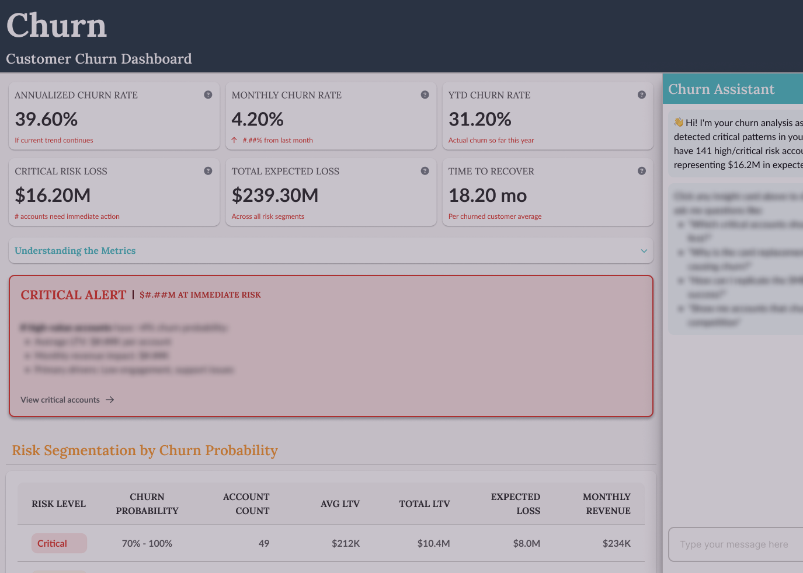
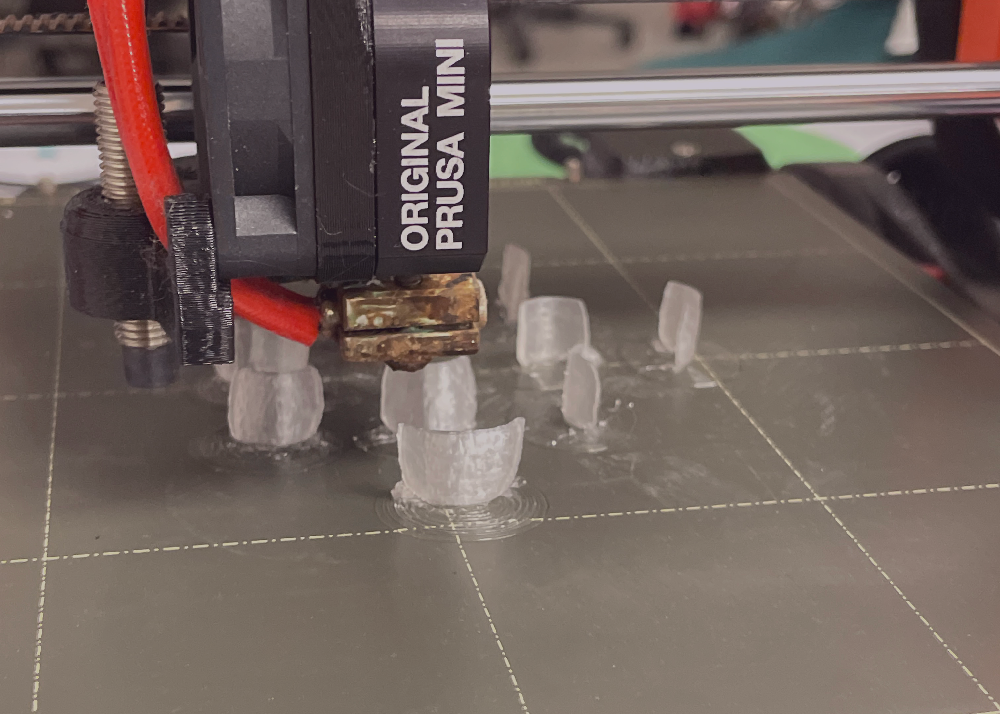

Interaction
How things change through exposure to other factors, designing for feedback loops where systems & people mutually shape each other.
Interconnectivity
Revealing how meaning emerges from relationships between ideas, people, & technologies rather than from isolated elements.
Perception
Designing with awareness that we actively construct reality from sensory input, shaped by attention, memory, language, & what we're primed to notice.
This portfolio is more than a showcase—it's a visual argument for how I think about design, technology, and human experience. As someone who studied both the science of mind and the art of interaction, I believe the best solutions emerge when we understand how people think, not just what they need.
The force-directed graph you see below isn't just a creative flourish. It's a deliberate reflection of my three core themes—interconnectivity, interaction, and perception—working together. Each node represents a skill, project, or research theme, and the connections between them show how my work is truly interdisciplinary. Just like how memory works through associative networks in the brain, this portfolio lets you explore knowledge through relationships rather than rigid hierarchies.
Every design choice—from the CMYK-inspired color palette to the carefully selected typography—is intentional and grounded in principles of accessibility and cognitive science. If you're curious about the reasoning behind these decisions, click the icon in the header to explore the full design system and philosophy.

Interaction
Churn/Score Dashboard
Figma
Claude AI
HTML/CSS

Perception
Custom 3D
Printed Nails
3D Scanning
Blender
3D Printing

Interconnectivity
Competitive
Analysis
Figma
Claude AI
HTML/CSS
Hi! I'm Lara
I'm a recent graduate from Wellesley College with a unique perspective shaped by two complementary fields: understanding how humans think and creating the technologies they interact with.
My approach is rooted in a simple belief: nothing exists in isolation. Everything—systems, people, ideas—is in constant conversation. This is why I'm drawn to the intersection of cognitive science and interactive media, focusing on how we interact with systems, how systems interconnect, and how we perceive information.
I'm also deeply influenced by the weak Sapir-Whorf hypothesis: language shapes thought. The way we present information—through interfaces, visualizations, or interactions—fundamentally affects how people understand it. Most things aren't inherently complicated; they become complicated when we present them poorly. That's why design, UX, and presentation matter.
My work combines research-backed insights from cognitive psychology with technical execution, creating experiences that don't just function—they communicate clearly and adapt to how humans actually think.